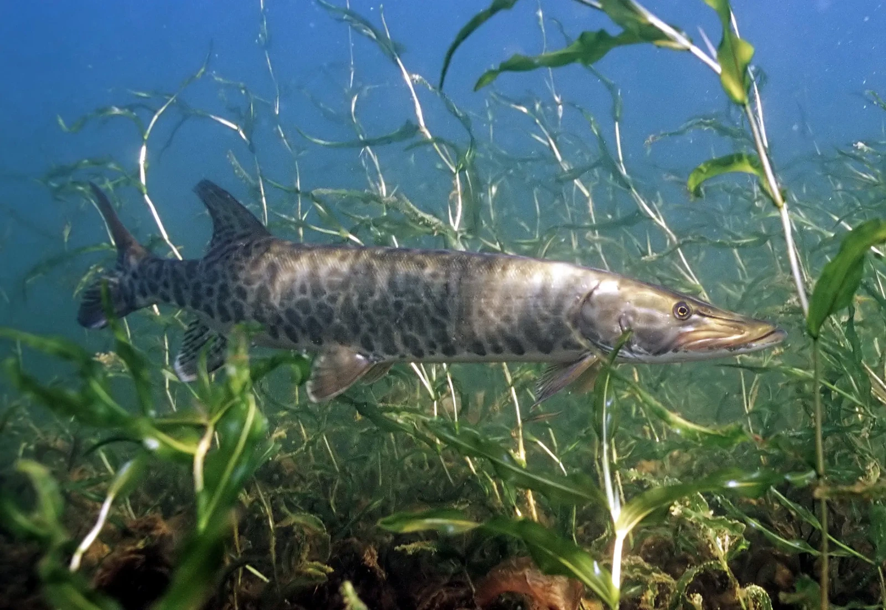

A fishes diet consists of...
They live in different places depending on the type of fish, Some fish live in saltwater,(The Ocean) or Freshwater, (Lakes and Rivers).
Click here to learn more about fish diets
Fish have to be very careful about what they eat and How open in the wild they are, because they dont want to get hooked. or eaten by other Fish